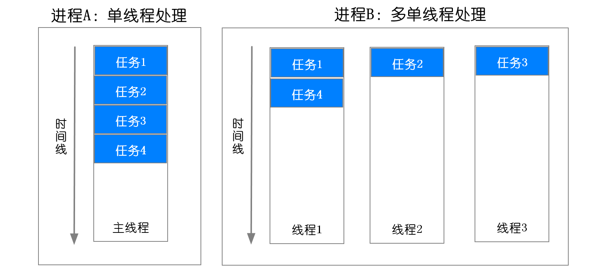
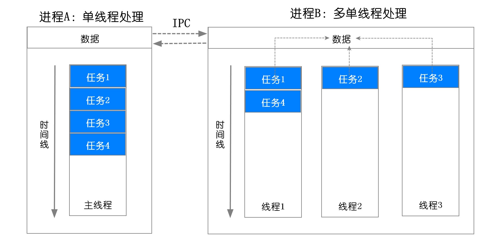
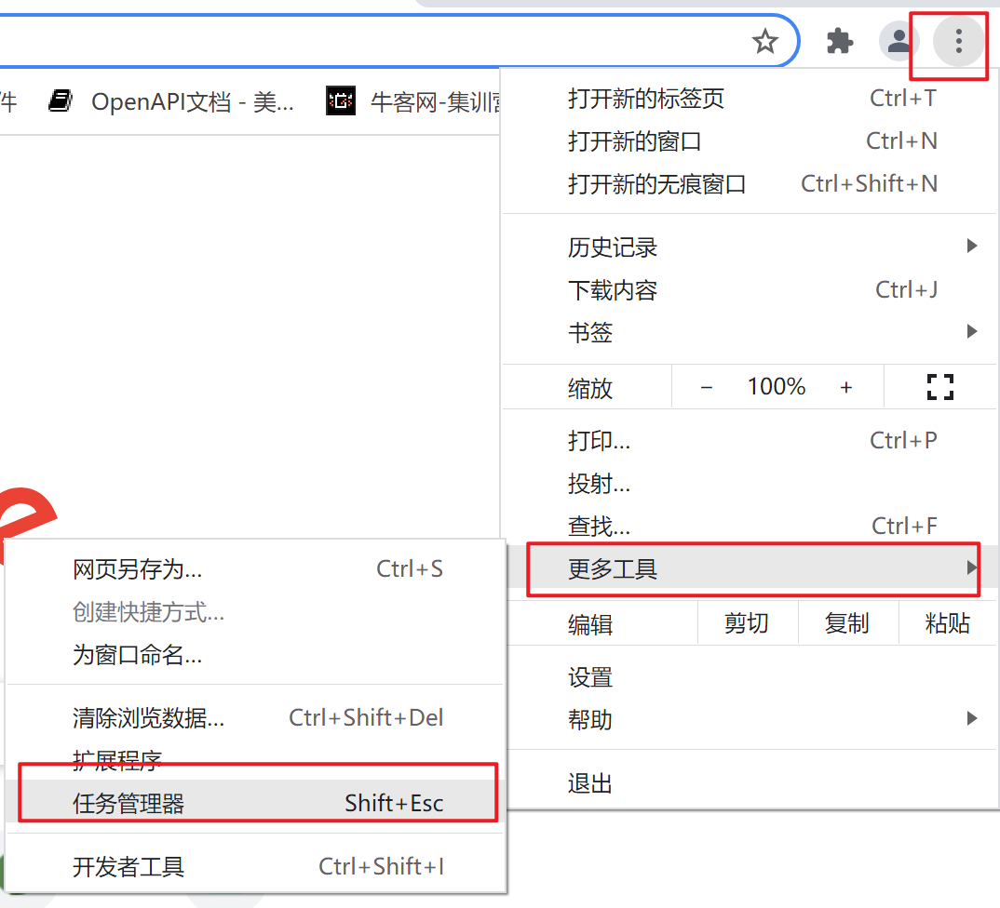
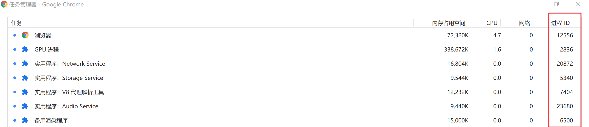
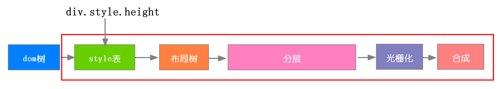
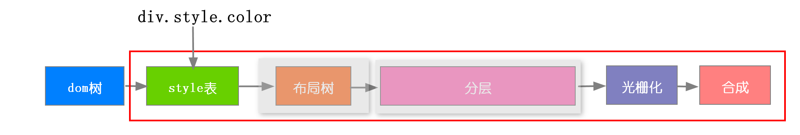

1. 浏览器内部构造
- 用户界面 - 包括地址栏、前进/后退按钮、书签菜单等。除了浏览器主窗口显示的您请求的页面外，其他显示的各个部分都属于用户界面。
- 浏览器引擎 - 在用户界面和呈现引擎之间传送指令。
- 渲染引擎 - 负责显示请求的内容。如果请求的内容是 HTML，它就负责解析 HTML 和 CSS 内容，并将解析后的内容显示在屏幕上。
- 网络 - 用于网络调用，比如 HTTP 请求。其接口与平台无关，并为所有平台提供底层实现。
- 用户界面后端 - 用于绘制基本的窗口小部件，比如组合框和窗口。其公开了与平台无关的通用接口，而在底层使用操作系统的用户界面方法。
- JavaScript 解释器。用于解析和执行 JavaScript 代码。
- 数据存储。这是持久层。浏览器需要在硬盘上保存各种数据，例如 Cookie。新的 HTML 规范 (HTML5) 定义了“网络数据库”，这是一个完整（但是轻便）的浏览器内数据库。

2. 浏览器的进程
2.1 进程和线程
进程：一个进程就是一个程序的运行实例。详细解释就是，启动一个程序的时候，操作系统会为该程序创建一块内存，用来存放代码、运行中的数据和一个执行任务的主线程，我们把这样的一个运行环境叫进程。
线程：程序执行的最小单位
进程和线程的关系：线程是依附于进程的，而进程中使用多线程并行处理能提升运算效率
进程和线程特点：
关联性：
- 线程中某个任务报错，阻止后面任务执行
- 进程中的任意一线程执行出错，都会导致整个进程的崩溃。
- 一个程序有多个进程，其中一个崩溃不影响其他进程。
当一个进程关闭之后，操作系统会回收进程所占用的内存。
数据共享：线程之间共享进程中的数据 进程之间的内容相互隔离。

2.2 浏览器进程
现代浏览器是多进程，每个标签页都是一个独立的渲染进程，比如写一个死循环，只有当前页面崩溃

浏览器进程：主要负责界面显示、用户交互、子进程管理，同时提供存储等功能。
渲染进程：核心任务是将 HTML、CSS 和 JavaScript 转换为用户可以与之交互的网页，排版引擎 Blink 和 JavaScript 引擎 V8 都是运行在该进程中，默认情况下，Chrome 会为每个 Tab 标签创建一个渲染进程。
GPU 进程：其实，Chrome 刚开始发布的时候是没有 GPU 进程的。而 GPU 的使用初衷是为了实现 3D CSS 的效果，只是随后网页、Chrome 的 UI 界面都选择采用 GPU 来绘制，这使得 GPU 成为浏览器普遍的需求。最后，Chrome 在其多进程架构上也引入了 GPU 进程。
网络进程：主要负责页面的网络资源加载，之前是作为一个模块运行在浏览器进程里面的，直至最近才独立出来，成为一个单独的进程。
插件进程。主要是负责插件的运行，因插件易崩溃，所以需要通过插件进程来隔离，以保证插件进程崩溃不会对浏览器和页面造成影响
3. 渲染进程
渲染进程的核心工作是将HTML,CSS和JavaScript转换为用户可以与之交互的网页。主要包括以下线程：
2.1 浏览器 GUI 渲染线程
2.1.1 渲染流程

- 分层的目的：避免整个页面渲染，把页面分成多个图层，尤其是动画的时候，把动画独立出一个图层，渲染时只渲染该图层就ok，transform，z-index等，浏览器会自动优化生成图层
- 光栅化：页面如果很长但是可视区很小，避免渲染非可视区的样式造成资源浪费，所以将每个图层又划分成多个小个子，当前只渲染可视区附近区域
2.1.2 重排
重排 ：当DOM的变化影响了元素的几何信息(元素的的位置和尺寸大小)，浏览器需要重新计算元素的几何属性，将其安放在界面中的正确位置，这个过程叫做重排
重排特点：style后面所有流程都更新

触发重排的方法
页面初始渲染，这是开销最大的一次重排
添加/删除可见的DOM元素
改变元素位置
改变元素尺寸，比如边距、填充、边框、宽度和高度等
改变元素内容，比如文字数量，图片大小等
改变元素字体大小
改变浏览器窗口尺寸，比如resize事件发生时
激活CSS伪类（例如：
:hover）设置 style 属性的值，因为通过设置style属性改变结点样式的话，每一次设置都会触发一次reflow
查询某些属性或调用某些计算方法：offsetWidth、offsetHeight等
2.1.3 重绘
重绘：当一个元素的外观发生改变，但没有改变布局,重新把元素外观绘制出来的过程
重绘特点：跳过布局和分层阶段

- 重排必重绘
2.1.4 避免重排的方法
样式集中改变
1
2
3
4
5
6
7
8
9
10
11
12// bad
var left = 10;
var top = 10;
el.style.left = left + "px";
el.style.top = top + "px";
// 当top和left的值是动态计算而成时...
// better
el.style.cssText += "; left: " + left + "px; top: " + top + "px;";
// better
el.className += " className";使用 absolute 或 fixed 脱离文档流
使用绝对定位会使的该元素单独成为渲染树中
body的一个子元素，重排开销比较小，不会对其它节点造成太多影响。当你在这些节点上放置这个元素时，一些其它在这个区域内的节点可能需要重绘，但是不需要重排GPU加速:transform
1
2
3
4
5
6
7
8
9/*
* 根据上面的结论
* 将 2d transform 换成 3d
* 就可以强制开启 GPU 加速
* 提高动画性能
*/
div {
transform: translate3d(10px, 10px, 0);
}
2.2 JavaScript 引擎线程
JS引擎线程负责解析Javascript脚本，运行代码 JS引擎一直等待着任务队列中任务的到来，然后加以处理，一个Tab页（renderer进程）中无论什么时候都只有一个JS线程在运行JS程序
GUI渲染线程与JS引擎线程是互斥的，所以如果JS执行的时间过长，这样就会造成页面的渲染不连贯，导致页面渲染加载阻塞
2.3 浏览器定时触发器线程
浏览器定时计数器并不是由 JavaScript 引擎计数的, 因为 JavaScript 引擎是单线程的, 如果处于阻塞线程状态就会影响记计时的准确, 因此通过单独线程来计时并触发定时是更为合理的方案
2.4 浏览器事件触发线程
当一个事件被触发时该线程会把事件添加到待处理队列的队尾，等待 JavaScript 引擎的处理。这些事件可以是当前执行的代码块如定时任务、也可来自浏览器内核的其他线程如鼠标点击、AJAX 异步请求等，但由于 JavaScript 的单线程关系所有这些事件都得排队等待 JavaScript 引擎处理。
2.5 浏览器 http 异步请求线程
在 XMLHttpRequest 在连接后是通过浏览器新开一个线程请求， 将检测到状态变更时，如果设置有回调函数，异步线程就产生状态变更事件放到 JavaScript 引擎的处理队列中等待处理。